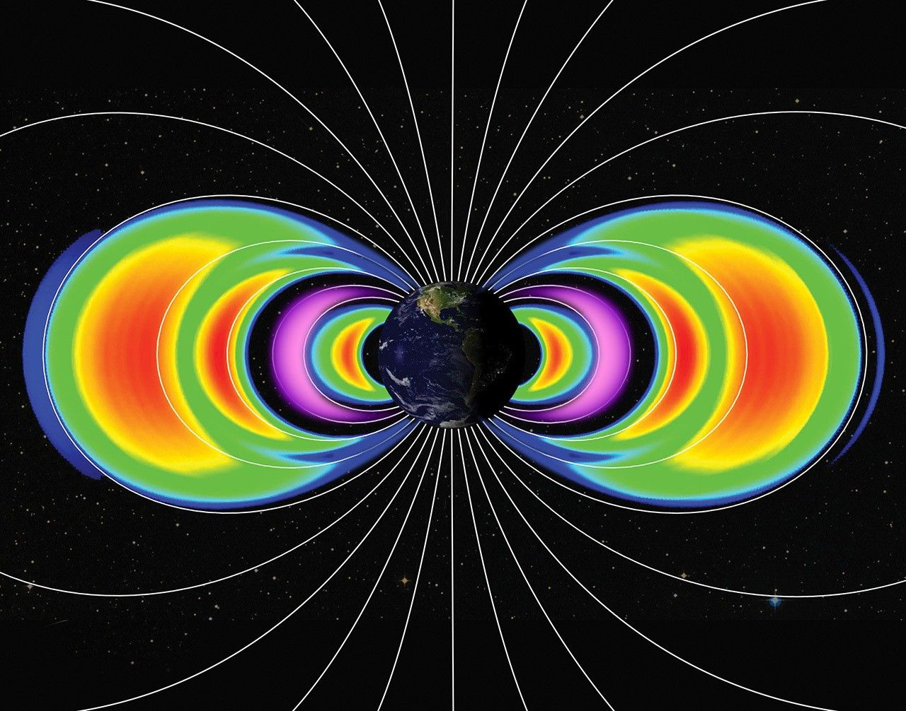
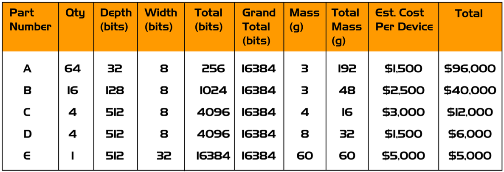

Promieniowanie i elektronika rad-hard vs COTS
Notatka raportu "Orbitalne centra danych". Kluczowe źródła: źródło 1, źródło 2.
W skrócie
Sercem każdego pomysłu na centrum danych na orbicie jest pytanie, czy najnowsze, komercyjne czipy AI (jak Nvidia H100) przetrwają w środowisku, gdzie dawka promieniowania jest około 1000 razy wyższa niż na powierzchni Ziemi (arXiv 2512.09044). Inwestor stoi tu przed twardym kompromisem kosztowym: elektronika "utwardzona radiacyjnie" (rad-hard) jest typowo około 100 razy droższa od zwykłej i jest o kilka generacji technologicznych w tyle (CERN R2E, NASA Spinoff), więc nie da się jej użyć do poważnych obciążeń AI bez utraty konkurencyjności wobec naziemnych GPU. Wygrywa więc strategia "tanie komercyjne czipy plus redundancja i ekranowanie", którą stosują HPE (657 dni bezbłędnej pracy na ISS), Google (Trillium TPU bez trwałych awarii do 15 krad) i Starcloud (pierwszy H100 w kosmosie) - ale ceną jest krótka żywotność rzędu około 2 lat oraz ryzyko nagłej, niszczącej awarii typu latch-up. Kto zyskuje: dostawcy szybkich GPU i firmy z dobrą architekturą redundancji; kto traci: tradycyjni dostawcy drogiej elektroniki rad-hard, jeśli model COTS się sprawdzi w skali. Tempo zmian jest gwałtowne - pierwsze loty testowe (Starcloud-1, Suncatcher) odbywają się dopiero w latach 2025-2027, więc twardych, recenzowanych danych o najnowszych GPU wciąż brakuje.
Spółki powiązane
Notowane spółki produkujące podzespoły/technologie związane z tym tematem. Pełne omówienie: spółki, dla których nisza to >=33% przychodów; skrótowe: zdywersyfikowane konglomeraty. Zob. też Słownik i Spółki z ekspozycją na giełdy europejskie.
Pozostali dominujący gracze (nisza to ułamek przychodów - omówienie skrótowe):
- NVIDIA Corporation (NVDA) - Akceleratory GPU (COTS) - ładunek obliczeniowy on-orbit
- Advanced Micro Devices, Inc. (AMD) - Rad-tolerant FPGA/SoC (Versal/Xilinx) + GPU
- Microchip Technology Incorporated (MCHP) - Rad-hard/rad-tolerant FPGA (RTG4) i mikrokontrolery
- BAE Systems plc (BA) 🇪🇺 - Rad-hard procesory (RAD750/RAD5545); optyka (Ball)
Powiązane wątki
Mapa powiązań tematycznych - jak ten wątek łączy się z resztą raportu.
- Fizyka orbitalna - wybór orbity to wybór środowiska radiacyjnego (TID)
- Niezawodność i serwisowanie - dawka skumulowana wyznacza żywotność i MTBF elektroniki
- Ekonomika i TCO - rad-hard vs COTS to kompromis koszt/wydajność wchodzący do TCO
- Weryfikacja tez sceptyka - weryfikuje tezę o elektronice rad-hard "kilkaset razy droższej"
- Bezpieczeństwo i geopolityka - dual-use i kontrola eksportu chipów rad-hard
Środowisko radiacyjne: czym właściwie grozi orbita
Aby ocenić ryzyko inwestycyjne, trzeba zrozumieć pięć typów zagrożeń, które niszczą elektronikę w kosmosie. Każdy z nich ma własną jednostkę i własny mechanizm.
TID (Total Ionizing Dose, całkowita dawka jonizująca) to skumulowana dawka promieniowania pochłonięta przez czip w całym okresie misji, mierzona w radach lub gografach (1 krad = 10 Gy). To powolne "starzenie" - jak rdza, która stopniowo psuje tranzystory. Na niskiej orbicie okołoziemskiej (LEO, Low Earth Orbit, około 300-650 km) na wysokości ISS NASA podaje dawkę rzędu 200 rad rocznie, głównie od cząstek uwięzionych w pasach Van Allena 🔵 (NASA NTRS). Inne źródło wtórne szacuje dla LEO ISS z osłoną 5 mm aluminium TID na 430 rad(Si)/rok, a dla najczystszej orbity LEO-Zero tylko około 136 rad(Si)/rok 🟠 (laser2cots). Dla porównania orbita geostacjonarna (GEO, 36 000 km) daje już około 5930 rad(Si)/rok, a orbita transferowa GTO aż 59 630 rad(Si)/rok 🟠 (laser2cots). NASA NEPP podaje to inaczej, jako dawkę 7-letnią: LEO 5-10 krad, MEO (orbita średnia, przez pasy Van Allena) 10-100 krad, a GEO około 50 krad od promieniowania kosmicznego 🔵 (NASA NEPP). Kluczowa liczba dla inwestora: na orbicie dawka jest około 1000 razy wyższa niż na Ziemi 🔵 (arXiv 2512.09044). Implikacja: wybór orbity to wybór ryzyka - LEO jest relatywnie łagodne, ale przelot przez pasy Van Allena lub start na GEO drastycznie skraca życie sprzętu.
xychart-beta
title "Dawka TID wg orbity (rad(Si)/rok, 5 mm Al)"
x-axis ["LEO-Zero", "LEO ISS", "GEO", "GTO"]
y-axis "rad(Si)/rok" 0 --> 60000
bar [136, 430, 5930, 59630]
Rys. 30 - Roczna dawka TID przy osłonie 5 mm aluminium: LEO-Zero 136, LEO ISS 430, GEO 5930, GTO aż 59 630 rad(Si)/rok. Wybór orbity to wybór ryzyka radiacyjnego. Dane: laser2cots.
SEE (Single-Event Effects, efekty pojedynczego zdarzenia) to nagłe uderzenie jednej cząstki w tranzystor. Dzielą się na: SEU (Single-Event Upset, "przekręcenie bitu" - błąd danych, odwracalny restartem), SEL (Single-Event Latch-up, zwarcie, które może spalić czip) i SET (Single-Event Transient, krótki impuls zakłócający). Zmierzona stawka SEU na orbicie satelity Alsat-1 to 4,04 × 10⁻⁷ błędów na bit na dzień, przy czym 98,6% z nich to pojedyncze bity 🔵 (Buchner et al.). Dla porównania utwardzony układ AMD XQR Versal ma stawkę przekłamań w pamięci konfiguracji (CRAM) rzędu 6,5 × 10⁻¹² zdarzeń/bit/dzień na GEO i 3,5 × 10⁻⁹ na LEO 🔵 (AMD DS946) - czyli o rzędy wielkości lepiej niż surowy COTS. Implikacja: SEU są częste, ale dają się korygować programowo; prawdziwym zabójcą inwestycji jest SEL, który w sekundy zamienia czip w "stop metalu" (newspaceeconomy).
Pasy Van Allena i SAA (South Atlantic Anomaly, Anomalia Południowoatlantycka) to obszary, gdzie pole magnetyczne Ziemi "schodzi nisko" i koncentruje naładowane cząstki. Satelita LEO przechodzi przez SAA 9 na 15 orbit dziennie 🔵 (NASA NTRS). Strumień protonów rośnie tam od 30 cząstek/(s·cm²) w spokojnych rejonach do ponad 200 000 w SAA i nad biegunami, a elektronów do 1 000 000/(s·cm²) 🔵 (NASA NTRS). Energie protonów LEO mieszczą się w zakresie 0,1-50 MeV, czyli dokładnie tam, gdzie powstają uszkodzenia półprzewodników 🔵 (NASA NTRS). Implikacja: większość rocznej dawki na LEO satelita zbiera w kilkunastominutowych przelotach przez SAA, co teoretycznie pozwala "uśpić" wrażliwe układy w tych oknach.

Rys. 31 - Pasy radiacyjne Van Allena - srodowisko promieniowania na orbicie. Źródło: NASA, licencja: public domain.
#grafika #promieniowanie-i-elektronika-rad-hard-vs-cots #promieniowanie #Van-Allen
GCR (Galactic Cosmic Rays, galaktyczne promieniowanie kosmiczne) i SPE (Solar Particle Events, słoneczne zdarzenia cząstkowe). GCR to nieustanny deszcz ciężkich, bardzo energetycznych jonów spoza Układu Słonecznego - na GEO jego strumień to około 3000 cząstek/(s·m²·sr), sześć razy więcej niż na LEO 🔵 (NASA NTRS), co potwierdza źródło wtórne (GCR około 6 razy wyższy na GEO niż LEO) 🟠 (laser2cots). SPE to nagłe rozbłyski Słońca - duże zdarzenia zdarzają się średnio 4 razy w roku, a uproszczona metoda NASA dolicza po 30 rad na rozbłysk, czyli dodatkowe 120 rad TID rocznie 🔵 (NASA NTRS). Implikacja: GCR są nie do zatrzymania rozsądną osłoną (zbyt energetyczne), więc na GEO i w deep-space rad-hard staje się praktycznie obowiązkowy.
COTS kontra rad-hard: koszty, opóźnienie generacyjne, wydajność
Sednem tezy inwestycyjnej jest pytanie, czy da się używać tanich, najnowszych komercyjnych czipów (COTS, Commercial Off-The-Shelf), czy trzeba sięgać po drogie, utwardzone radiacyjnie (rad-hard).
Najnowsze COTS AI. Nvidia H100 to czip z 80 miliardami tranzystorów w procesie 4 nm, oferujący około 3958 TFLOPS w formacie FP8 🔴 (newspaceeconomy, newvib). Ma wbudowaną korekcję błędów ECC (Error-Correcting Code) w pamięci HBM3, cache i rejestrach, ale - co kluczowe - nie ma żadnej fizycznej ochrony przed TID ani SEL 🔴 (newspaceeconomy). Następca, Nvidia B200 (Blackwell), poleci na Starcloud-2 🟠 (GeekWire). Google przetestował swój TPU Trillium v6e w wiązce protonów 67 MeV i nie zaobserwował trwałych awarii aż do 15 krad(Si), choć pamięć HBM wykazywała nieregularności już od 2 krad(Si) 🔵 (arXiv 2511.19468). Implikacja: najnowsze TPU/GPU mają zaskakująco dobrą odporność "z fabryki" dzięki małym geometriom i ECC, co podważa założenie, że bez rad-hard nic nie zadziała.
Mitygacja COTS. Zamiast utwardzać krzem, stosuje się: ECC (korekcja błędów pamięci), redundancję (kilka kopii danych/obliczeń), watchdog (układ pilnujący i restartujący zawieszony procesor) oraz "latch-up detection" - układ, który wykrywa zwarcie i na kilka sekund odcina zasilanie, czyszcząc je, zanim czip się spali 🔴 (newspaceeconomy). Po stronie rad-hard standardem jest TMR (Triple Modular Redundancy, potrójne powielenie układu z głosowaniem), które jednak wymaga ponad 3 razy większej powierzchni i ponad 3 razy większego poboru mocy 🔴 (newspaceeconomy). Techniki architektoniczne (ECC, TMR, ochrona latch-up) dają narzut powierzchni od 10% do 300% 🔵 (arXiv 2605.05615). U AMD mechanizm XilSEM daje około 30 razy lepszą ochronę CRAM niż wcześniejsze techniki 🟠 (ESA SEFUW) i osiąga 100% korygowalnych SEU w CRAM bez zdarzeń niekorygowalnych 🟠 (nextbigfuture). Implikacja: redundancja kosztuje moc i masę, ale na orbicie energia bywa "darmowa" ze Słońca, więc nadmiarowy COTS może być tańszy całościowo niż rad-hard.
Weryfikacja tezy "rad-hard kilkaset razy droższy". Teza jest POTWIERDZONA z zastrzeżeniem zakresu. CERN podaje typową różnicę cen rzędu czynnika około 100 🔵 (CERN R2E). W ujęciu bezwzględnym: procesor COTS kosztuje 10-500 USD, rad-tolerant/upscreened 500-5000 USD, a pełny rad-hard klasy V od 10 000 do ponad 200 000 USD za sztukę 🟠 (Hubble). Skrajny przykład: zwykły układ czasowy 555 kosztuje grosze, a jego wersja rad-hard ponad 250 USD 🔴 (cubesat.market). Do tego dochodzi koszt samej certyfikacji COTS pod kosmos: charakteryzacja jednego układu pod SEE to 25-600 tys. USD zależnie od złożoności 🔵 (CERN R2E). Implikacja: "kilkaset razy" jest prawdą dla prostych układów, ale dla high-endowych FPGA rad-hard różnica jest bliższa 100x - inwestor nie powinien przyjmować mnożnika w ciemno.
xychart-beta
title "Koszt jednostkowy procesora wg klasy (USD)"
x-axis ["COTS", "rad-tolerant", "full rad-hard"]
y-axis "USD/sztuka (gorny przedzial)" 0 --> 200000
bar [500, 5000, 200000]
Rys. 32 - Górne granice cen jednostkowych: COTS 500 USD, rad-tolerant/upscreened 5000 USD, pełny rad-hard klasy V 200 000 USD. Skala liniowa uwypukla, że rad-hard jest o rzędy wielkości droższy (dolne progi to odpowiednio 10, 500 i 10 000 USD). Dane: Hubble.

Rys. 33 - Koszt pamieci SRAM rad-hard vs COTS - skala roznicy cenowej. Źródło: UPSat MSc thesis, licencja: akademickie - do uzytku wlasnego.
#grafika #promieniowanie-i-elektronika-rad-hard-vs-cots #rad-hard #COTS
Opóźnienie generacyjne node'ów. Rad-hard używa zwykle starych procesów technologicznych 150-65 nm, podczas gdy komercyjne układy są na 5 nm lub 3 nm 🟠 (Hubble). NASA potwierdza, że komputery rad-hard "są zwykle o kilka generacji w tyle za aktualnym stanem techniki", a samo utwardzanie "zajmuje 10 lat i miliony dolarów" 🔵 (NASA Spinoff). Co więcej, utwardzony COTS osiąga tylko około 28-33% oryginalnej wydajności 🟠 (NSF SHREC). Implikacja: to fundamentalny argument za COTS w AI - obciążenia AI wymagają najnowszego krzemu, a rad-hard z definicji go nie dostarcza.
Przykłady rad-hard/rad-tolerant. AMD XQR Versal XQRVC1902: TID 100-120 krad(Si), odporność na SEL powyżej 80 MeV·cm²/mg, 133 TOPS INT8, 1968 silników DSP, już używany w satelitach Starlink V2 mini 🔵🟠 (AMD DS946, nextbigfuture). Microchip SAMRH71: TID ponad 100 krad(Si), brak SEU do LET 20 MeV·cm²/mg bez mitygacji systemowej 🟠 (electronicproducts). Dla porównania komercyjne moduły Nvidia Jetson w testach ESA: Xavier TID 22-24 krad (zasilany), Orin 37-39 krad (zasilany), oba 50 krad niezasilane; Xavier wolny od SEL poniżej 15 LET, Orin poniżej 30 LET 🟠 (ESA/escies). Implikacja: nawet "zwykłe" moduły AI Nvidia mają przyzwoitą odporność TID rzędu dziesiątek krad, co czyni je realną opcją dla krótkich misji LEO.
xychart-beta
title "Prog odpornosci TID modulow AI (krad(Si))"
x-axis ["Trillium", "Jetson Xavier", "Jetson Orin", "XQR Versal"]
y-axis "krad(Si)" 0 --> 120
bar [15, 23, 38, 110]
Rys. 34 - Próg odporności TID: TPU Trillium 15 krad(Si) bez twardych awarii, Jetson Xavier 22-24 krad (tu 23), Jetson Orin 37-39 krad (tu 38), rad-hard AMD XQR Versal 100-120 krad (tu 110). Dane: arXiv 2511.19468 (Trillium), ESA/escies (Jetson), AMD DS946 (XQR Versal).
Ekranowanie: masa osłony kontra zysk
Ekranowanie (shielding) zatrzymuje cząstki materiałem, ale każdy gram osłony to gram, który trzeba wynieść na orbitę - więc to wprost koszt. Standardem są 5 mm aluminium, eliminujące cząstki o niskiej energii 🔵 (NASA NTRS Neuromorphic). Rozróżnia się dwa podejścia: "box shielding" (osłona całego pudełka, prosta, ale ciężka) i "spot shielding" (punktowa osłona pojedynczego czipa) - do tego drugiego używa się folii tantalowej, materiału o wysokiej liczbie atomowej (high-Z), nakładanej wprost na obudowę czipa 🔵 (NASA NTRS Neuromorphic). W projekcie UPenn osłona z około 20 mm mieszanki woda+aluminium wokół każdego węzła daje szacowaną dawkę około 10 Gy (1 krad) rocznie na wysokości 1600 km 🔵 (arXiv 2512.09044). To istotne, bo wcześniejsze testy NASA pokazały, że komercyjne (nieutwardzone) GPU nie ulegały trwałej awarii do dawek 60 Gy (6 krad) 🔵 (arXiv 2512.09044), co potwierdza niezależne badanie (5 GPU testowane do 6 krad, żadna karta nie uległa trwałej awarii) 🟠 (MDU). Komercyjny dysk SSD Foremay SC199 z ekranowaniem typu Graded-Z obniża dawkę z 10 000 krad do 500 krad 🔴 (systerra). Blogowe źródło szacuje TID dla LEO 500 km na 10-20 krad rocznie 🔴 (adsbnetwork). Implikacja: ekranowanie kilkoma mm-cm materiału może sprowadzić dawkę poniżej progu trwałych uszkodzeń COTS GPU na LEO, co jest fizyczną podstawą całej tezy o komercyjnych czipach w kosmosie - ale masa osłony bezpośrednio obniża rentowność wynoszenia.
Heritage lotny: co już naprawdę poleciało
Dla inwestora najważniejsze są nie modele, lecz fakty z lotu (flight heritage).
HPE Spaceborne Computer-1 (SBC-1) na ISS. To kluczowy dowód, że COTS działa w kosmosie. SBC-1 (komercyjny serwer bez utwardzania) pracował na ISS przez 657 dni, osiągnął 1,1 TFLOPS w benchmarku Linpack i nigdy nie zwrócił błędnego wyniku ani nie miał przerwania z winy komputera 🟠 (ISS National Lab). Co znamienne: najdłuższa publicznie prognozowana żywotność SBC-1 wynosiła zaledwie 4 dni, "bo nie zrobiliśmy nic ze sprzętem" - a przetrwał 657 dni dzięki samej mitygacji programowej (spowalnianie i przechodzenie w stan bezpieczny w trudnych warunkach) 🔵🟠 (NASA Spinoff, ISS National Lab). Awaryjność widać w danych: z 20 dysków SSD 9 uległo awarii podczas misji, ale dzięki redundancji nie utracono danych 🟠 (ISS National Lab). Następca SBC-2 ma 2x większą moc i zawiera GPU oraz funkcje AI 🟠 (ISS National Lab). Implikacja: redundancja programowa potrafi rozciągnąć żywotność COTS z dni do lat - to walidacja całego modelu, ale 45% awaryjność SSD pokazuje, że nadmiarowość sprzętu jest obowiązkowa.
Demo Starcloud z H100 (DO POTWIERDZENIA). Starcloud-1 wystartował w listopadzie 2025 z pierwszym GPU Nvidia H100 w kosmosie - to satelita o masie 60 kg, wielkości mini-lodówki 🔴🟠 (starcloud.com, nextbigfuture). Nominalna misja to 11 miesięcy, po czym satelita zejdzie z orbity 325 km i spłonie 🟠 (SDxCentral). W grudniu Starcloud-1 jako pierwszy satelita uruchomił wersję modelu Gemini w kosmosie i jako pierwszy statek wytrenował LLM (model nanoGPT Andreja Karpathy'ego) 🔴 (starcloud.com). UWAGA: większość danych o Starcloud pochodzi ze źródeł weak (materiały firmowe, blogi), brakuje recenzowanych wyników radiacyjnych - dlatego te twierdzenia oznaczam jako DO POTWIERDZENIA. Project Suncatcher (Google/Planet) planuje start 2 prototypów na początek 2027 roku, docelowo klaster 81 satelitów w promieniu 1 km na wysokości 650 km, z łączem optycznym 1,6 Tbps 🔵 (arXiv 2511.19468). Implikacja: rok 2025-2027 to faza "pierwszych demonstratorów" - inwestor kupuje obietnicę, nie sprawdzoną w wieloletniej eksploatacji technologię.
Żywotność elektroniki vs dawka skumulowana i MTBF
MTBF (Mean Time Between Failures, średni czas między awariami) i żywotność to ostateczne metryki rentowności - im krócej żyje czip, tym częściej trzeba go wymieniać/dowozić. NASA JSC dla testów SEE wymaga minimum 10¹⁰ protonów/cm² (przy 200 MeV) lub 10⁶ ciężkich jonów/cm², i przypisuje MTBF 10 lat dla niszczących latch-upów niewidzianych w teście minimalnym 🔵 (NASA JSC). W testach naziemnych karta MSI HD6450 (z GPU AMD) osiągnęła najlepszy wynik 43,1 dnia MTTFI (mean time to functional interrupt) 🟠 (MDU). Literatura naukowa podaje, że komercyjne GPU w LEO działają typowo tylko około 2 lata, COTS DRAM może paść w ciągu miesięcy, a moduł Jetson Nano przestaje działać po około 2 latach z powodu TID, DD (Displacement Damage) i SEE 🔵 (arXiv 2605.05615). Dla kontrastu konfiguracja rad-hard (projekt 14 nm rad-tolerant) celuje w 10 lat eksploatacji 🔵 (arXiv 2605.05615), a Google szacuje żywotność TPU Trillium na około 15 lat, bo brak twardych awarii do 15 krad (150 Gy) odpowiada około 15 latom na orbicie 🔵 (arXiv 2512.09044). Implikacja: rozpiętość żywotności jest ogromna (miesiące dla DRAM, około 2 lata dla GPU, do 15 lat dla najlepszych TPU/rad-hard) - i to ona decyduje, czy orbitalne DC ma sens ekonomiczny, bo każda wymiana sprzętu wymaga kolejnego startu rakiety.
xychart-beta
title "Zywotnosc sprzetu w LEO (lata)"
x-axis ["COTS DRAM", "COTS GPU", "rad-hard 14nm", "TPU Trillium"]
y-axis "lata eksploatacji" 0 --> 15
bar [0.3, 2, 10, 15]
Rys. 35 - Szacowana żywotność na orbicie LEO: COTS DRAM rzędu miesięcy (około 0,3 roku), COTS GPU około 2 lata, konfiguracja rad-hard 14 nm 10 lat, TPU Trillium do 15 lat. To żywotność decyduje o ekonomii orbitalnego DC. Dane: arXiv 2605.05615 (LLMSpace), arXiv 2512.09044 (UPenn).
Kontrowersje
Kontrowersja 1: Czy COTS + redundancja wystarcza dla obciążeń AI, czy konieczny jest rad-hard?
Strona A - COTS + redundancja wystarcza (dla LEO/NewSpace). HPE SBC-1 (czysty COTS) pracował 657 dni bez ani jednego błędnego wyniku 🟠 (ISS National Lab). Starcloud-1 z H100 działa w LEO i wytrenował LLM 🔴 (starcloud.com). Google Trillium przetrwał 15 krad TID bez twardych awarii 🔵 (arXiv 2511.19468). SpaceX Starlink V2 mini używa węzłów Intel Atom i SoC ARM z "programowo definiowaną redundancją zamiast utwardzania sprzętowego" 🔴 (tempmail.ninja).
Strona B - COTS bez rad-hard jest niewystarczający dla misji wieloletnich/krytycznych. H100 nie ma żadnej fizycznej ochrony przed TID/SEL 🔴 (newspaceeconomy). Komercyjne GPU w LEO żyją typowo tylko około 2 lata 🔵 (arXiv 2605.05615). SEL może w sekundy "stopić czip w żużel", jeśli zasilanie nie zostanie odcięte 🔴 (newspaceeconomy). Pełny rad-hard pozostaje wymagany dla GEO, obronności i misji flagowych 🟠 (Hubble). Nie uśredniam: spór jest realny i zależy od orbity (LEO sprzyja COTS, GEO/deep-space wymaga rad-hard) oraz horyzontu misji (krótka demo vs wieloletnia eksploatacja).
Kontrowersja 2: Rozbieżność danych o żywotności najnowszych GPU pod promieniowaniem
Dane są realnie rozbieżne. Modelowana awaryjność H100 to 9%/rok 🔴 (adsbnetwork), ale rzeczywista zmierzona na Starcloud-1 to 5%/rok, czyli lepiej niż model 🔴 (adsbnetwork). Szacowana żywotność H100 z ekranowaniem to 2-3 lata 🔴 (adsbnetwork), spójna z literaturową wartością około 2 lat dla COTS GPU w LEO 🔵 (arXiv 2605.05615). Tymczasem nominalna misja Starcloud-1 to tylko 11 miesięcy 🟠 (SDxCentral) - czyli za krótka, by zweryfikować te szacunki. Komentarz faktyczny: dane są niepełne i nieporównywalne między orbitami, poziomem ekranowania i definicją "awarii". Starcloud-1 działa krótko i nie publikuje szczegółowych danych radiacyjnych; ADS-B Network to blog analityczny bez dostępu do surowych danych. W literaturze recenzowanej brak publicznych wyników testów H100/B200 pod promieniowaniem - to luka, której inwestor nie powinien lekceważyć.
Słowniczek pojęć
- TID (Total Ionizing Dose) - skumulowana dawka jonizująca pochłonięta przez czip przez całą misję, powodująca powolne "starzenie" tranzystorów (mierzona w radach/grejach).
- SEE (Single-Event Effects) - nagłe efekty wywołane uderzeniem pojedynczej cząstki w tranzystor, obejmujące SEU, SEL i SET.
- SEU (Single-Event Upset) - odwracalne "przekręcenie bitu", czyli błąd danych, który można naprawić restartem.
- SEL (Single-Event Latch-up) - pasożytnicze zwarcie wywołane cząstką, które bez odcięcia zasilania może w sekundy trwale spalić czip.
- SET (Single-Event Transient) - krótki, przejściowy impuls zakłócający sygnał wywołany przez cząstkę.
- rad-hard (radiation-hardened) - elektronika utwardzona radiacyjnie na poziomie krzemu, droga i o kilka generacji w tyle za komercyjną, ale bardzo odporna na promieniowanie.
- COTS (Commercial Off-The-Shelf) - tania, najnowsza elektronika komercyjna "z półki", bez fabrycznej ochrony radiacyjnej.
- ECC (Error-Correcting Code) - kod korekcyjny pamięci, który wykrywa i naprawia błędy bitowe (np. wywołane SEU).
- TMR (Triple Modular Redundancy) - potrójne powielenie układu z głosowaniem większościowym, kosztem ponad 3x większej powierzchni i poboru mocy.
- Pasy Van Allena - obszary wokół Ziemi, gdzie pole magnetyczne uwięziło naładowane cząstki, będące głównym źródłem dawki na niskiej orbicie.
- SAA (South Atlantic Anomaly) - Anomalia Południowoatlantycka, region nad południowym Atlantykiem, gdzie pas radiacyjny schodzi nisko i drastycznie zwiększa strumień cząstek.
- GCR (Galactic Cosmic Rays) - galaktyczne promieniowanie kosmiczne, nieustanny deszcz bardzo energetycznych jonów spoza Układu Słonecznego, którego nie da się rozsądnie wyekranować.
- SPE (Solar Particle Events) - słoneczne zdarzenia cząstkowe, nagłe rozbłyski Słońca dorzucające dodatkową dawkę promieniowania.
- LEO (Low Earth Orbit) - niska orbita okołoziemska (około 300-650 km) o relatywnie łagodnym środowisku radiacyjnym.
- MTBF (Mean Time Between Failures) - średni czas między awariami, kluczowa metryka rentowności określająca, jak często trzeba wymieniać sprzęt.
- shielding (ekranowanie) - osłona materiałowa (np. 5 mm aluminium) zatrzymująca cząstki, której masa wprost obciąża koszt wynoszenia na orbitę.
- FPGA (Field-Programmable Gate Array) - reprogramowalny układ logiczny (np. AMD XQR Versal), popularny w wersjach rad-hard dla zastosowań kosmicznych.
- LET (Linear Energy Transfer) - liniowy transfer energii cząstki, miara jej zdolności do wywołania uszkodzeń (jednostka MeV·cm²/mg, próg odporności na SEL/SEU).
Linkują tutaj
10 powiązanych notatek
- Mapa raportu Orbitalne / kosmiczne centra danych
- Sekcja Weryfikacja tez sceptycznego artykułu
- Sekcja Fizyka orbitalna, orbity i operacje
- Sekcja Chłodzenie i radiacyjne odprowadzanie ciepła
- Sekcja Niezawodność, serwisowanie i cykl życia sprzętu
- Sekcja Bezpieczeństwo, geopolityka i realizm 10-letni
- Spółka Advanced Micro Devices (AMD)
- Spółka BAE Systems (BA)
- Spółka Microchip Technology (MCHP)
- Spółka NVIDIA (NVDA)